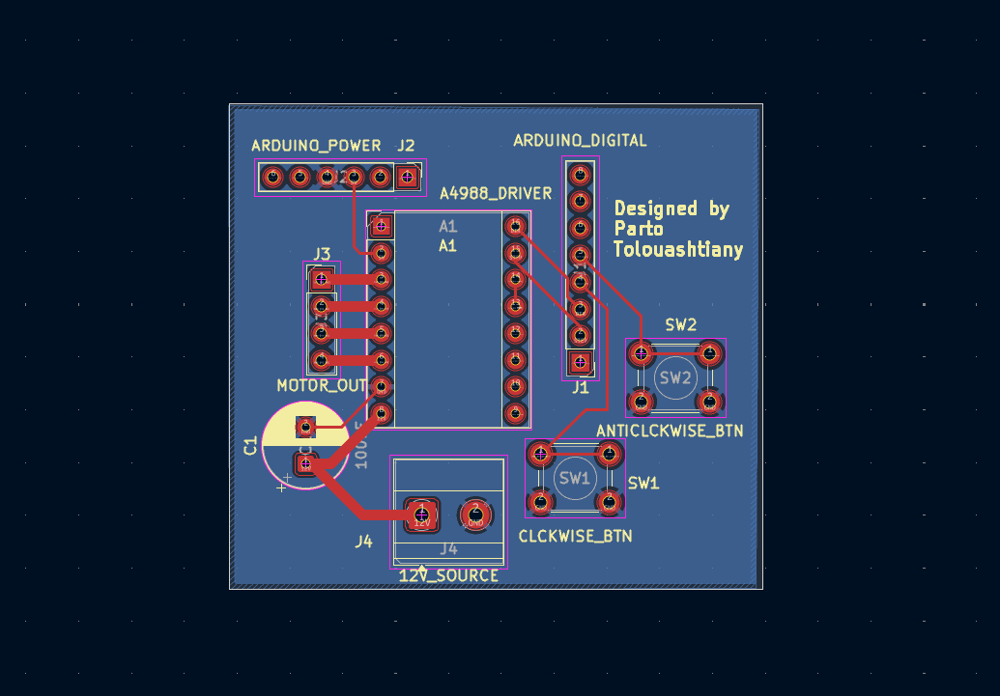
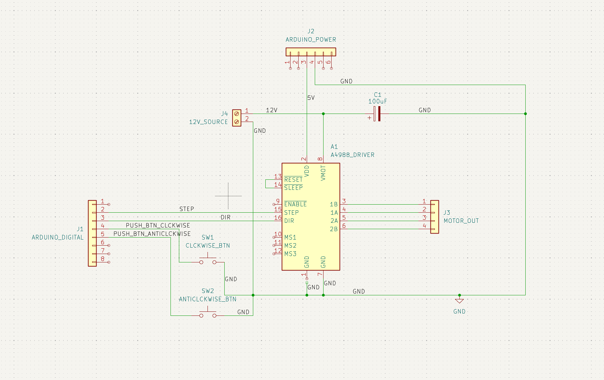
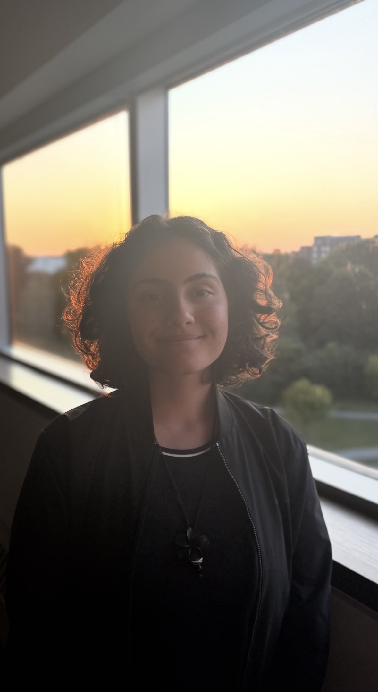
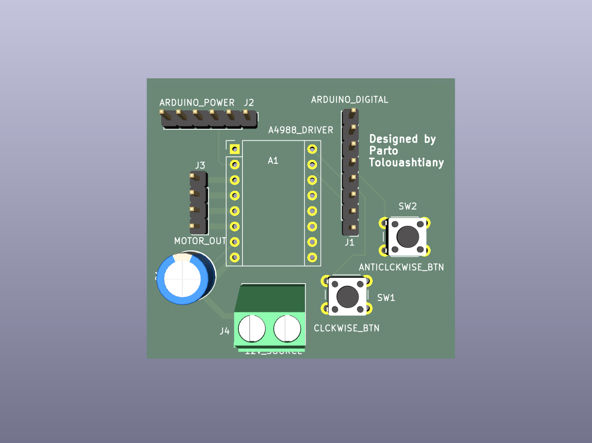
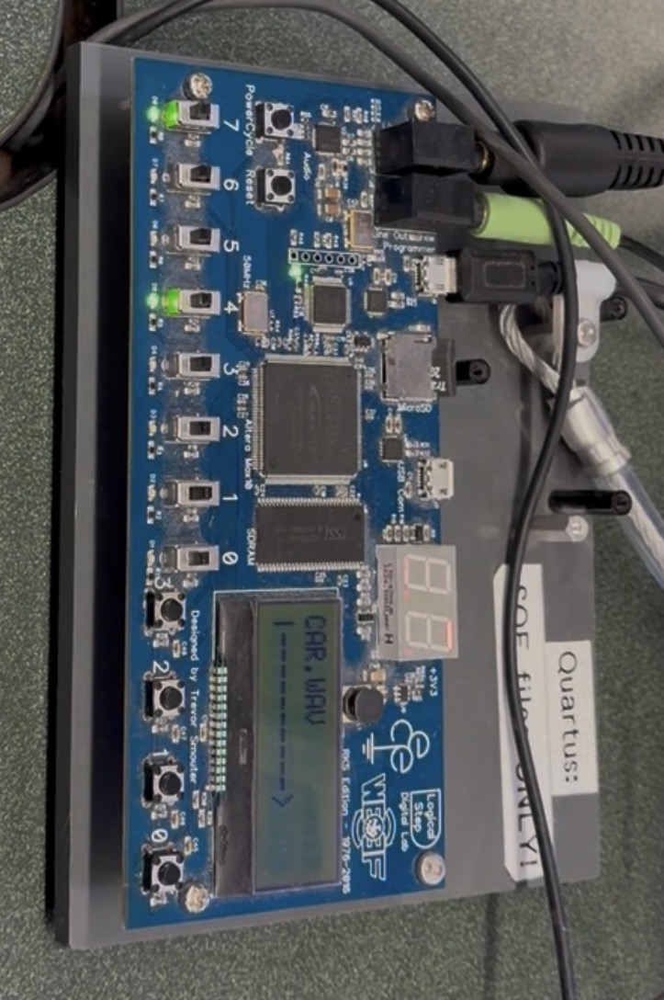

hardware design
Custom PCB for NEMA 17 Motor Driver (KiCad)
A 2 layer motor controller PCB created in KiCad. It interfaces an A4988 Driver module, 2 pushbuttons and an Arduino Uno to a Nema-17 Motor.


> hello, I’m
computer engineering student
I'm a 19 year old Computer Engineering student studying at the University of Waterloo. Alongside my studies, I love playing Varsity Squash, trying new video games (currently playing Subnautica!), and creating new things from electronics to arts & crafts.

Relevant Coursework
Welcome to my projects! Feel free to explore and filter.
(This page is a work in progress — many projects have yet to be added, stay tuned!)

Hardware Design
Custom PCB for NEMA 17 Motor Driver(KiCad)
A 2 layer motor controller PCB created in KiCad. It interfaces an A4988 Driver module, 2 pushbuttons and an Arduino Uno to a Nema-17 Motor.
open project →
Embedded
RISC-V LED Counter(Assembly)
Interrupt-driven LED control using pushbutton input, memory-mapped I/O, and embedded debugging.
open project →
Embedded
FPGA-Based Traffic Controller (VHDL)
An FPGA-based traffic controller in VHDL using Quartus Prime and a Moore state machine architecture.
open project →
Embedded/Firmware
STM32-Based Medicine Dispenser (C++)
A medicine dispenser made in a team using two STM32 microcontrollers
open project →A 2 layer motor controller PCB created in KiCad. It interfaces an A4988 Driver module, 2 pushbuttons and an Arduino Uno to a Nema-17 Motor.


An interrupt-driven embedded project where pushbutton input changes LED state without constant polling.
An FPGA-based traffic controller in VHDL using Quartus Prime and a Moore state machine architecture.
A medicine dispenser made in a team using 2 STM32 microcontrollers
Image shown is from a very early design iteration
Jan - April 2026
May - Aug 2025
Jan 2021 - Aug 2024